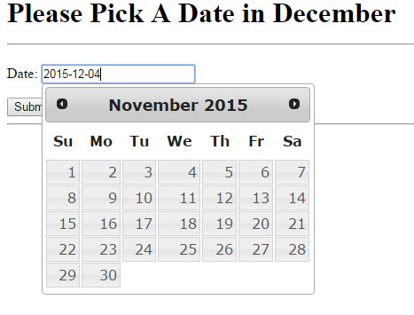
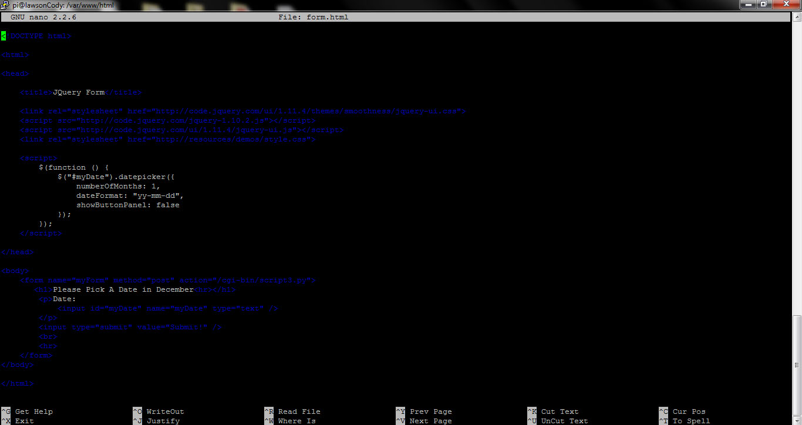
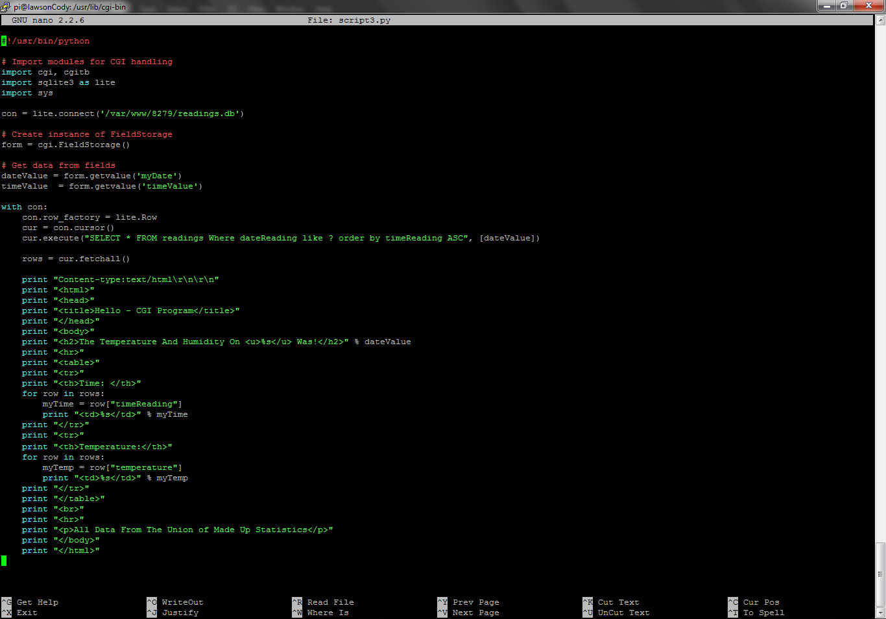
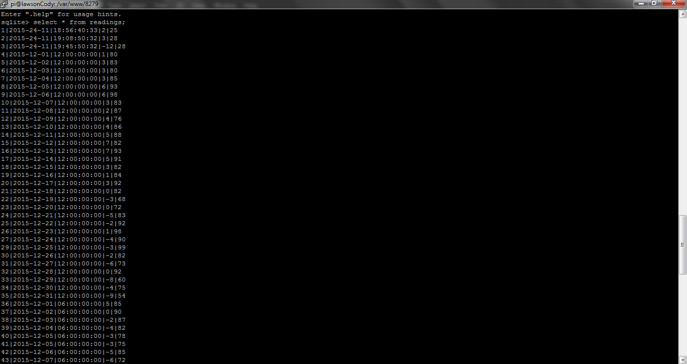

Python Weather Site
Alright so I couldn't exactly host this one. A brief summary of what this project entailed. I should note that the entire project was hosted on my raspberry pi. First I created a database and then a form that asked the user for the date. The form was actually my first look at JQuery. The data that the form receives then gets sent to a python script, the script queries my database with SQLite3. After that the script finds all of the data in the database with the correct date it prints it to the screen. This is probably the most technically impressive part of my portfolio at the moment.
The Form
This is the html form we alluded to above, it askes the user to pick a date in December and then sends the value to the python script.

How Does The Form Work?

The Output

So this is the output of the data we sent above. Using Python we query the database and send back the appropriate values.
How Does The Python Work?

The Database
Lastly here's a screen grab of some of the values within my database. I think at the end there were nearly 400 values. I could of added more but it was never really about the weather.
